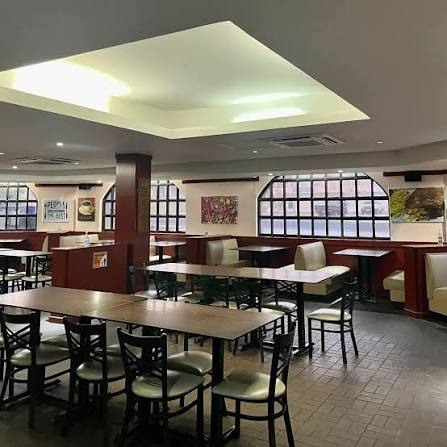

J's Restaurant | Gualo Rai, Saipan

J's Restaurant Photo source: Facebook
This restaurant is recognized to serve top-quality dishes and desserts. They also have one of the friendliest and helpful staff you'll meet.
What I Love:
- Top Quality-Food
- Cheap Prices
- Friendly Staff